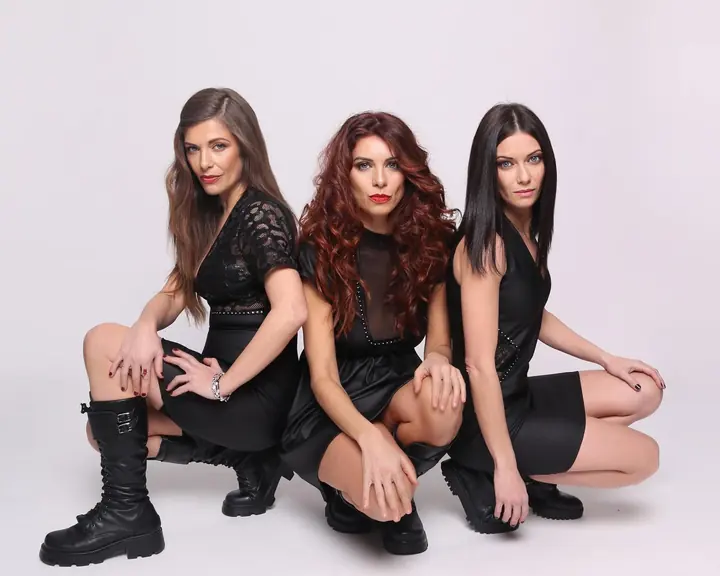
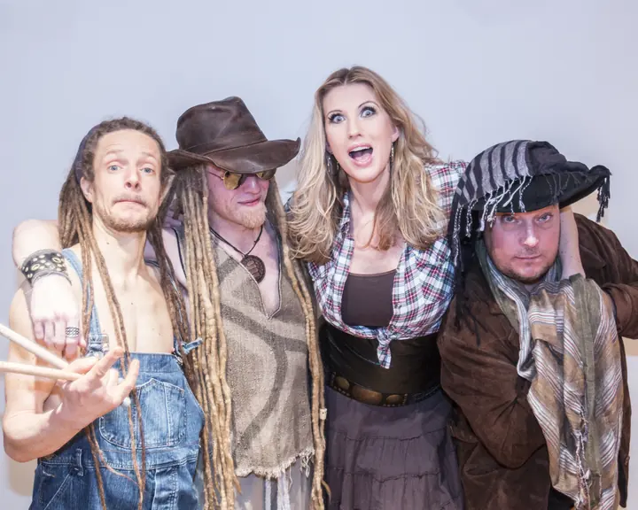
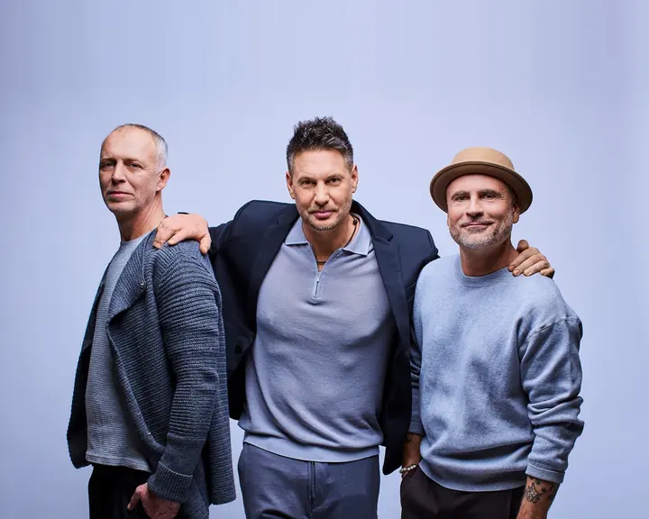
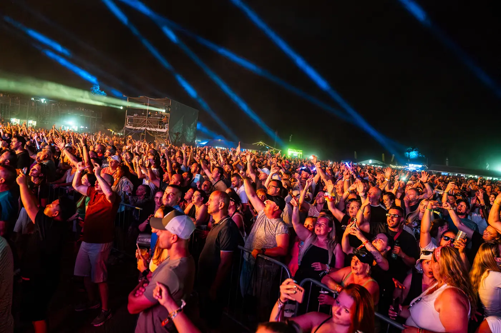
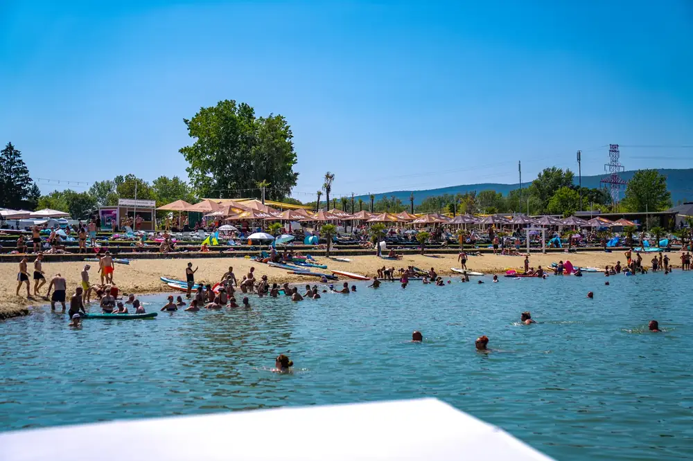

Premiéra na BSF

Vengaboys
„We're Going to Ibiza!“
3. ročník · najväčší a najlepší
Do festivalu zostáva…
Limitovaný predpredaj · cena platí do vypredania predpredajovej vlny
prvé mená sú známe!
Viac ako 35 interpretov naživo. Mená odhaľujeme postupne – ďalšie pribudnú už čoskoro.
„We're Going to Ibiza!“

„Bailando“

„Aserejé“

„Cotton Eye Joe“

„Máma“
sledujte odhalenie
sledujte odhalenie
sledujte odhalenie
Holandská eurodance legenda z Rotterdamu. Skupinu v roku 1997 založili producenti Danski a Delmundo a jej nahrávky sa podľa odhadov predali v počte približne 25 miliónov kusov na celom svete.
Singel Boom, Boom, Boom, Boom!! sa dostal na 1. miesto rebríčkov vo Veľkej Británii, v Holandsku aj na Novom Zélande. Ich symbolom je Vengabus – party autobus z hitu We Like to Party! (The Vengabus).
Na BIG SUMMER FESTE budú mať v roku 2027 premiéru.
Holandská speváčka Marie-José van der Kolk sa narodila v roku 1974 v IJmuidene. Kariéru začínala v 90. rokoch na Mallorke po boku DJ Sammyho.
Jej Bailando z roku 1998 bolo osem týždňov na 1. mieste v Nemecku a získalo cenu Echo za najlepší medzinárodný dance singel. Na vrchol nemeckého rebríčka sa dostala aj s piesňou Hijo de la Luna.
Oba singly získali zlaté a platinové platne v Nemecku, Rakúsku a Švajčiarsku.
Španielska skupina z Córdoby, ktorú založili sestry Lucía, Lola a Pilar Muñoz – dcéry flamenkového hudobníka El Tomate.
Ich Aserejé (The Ketchup Song) z roku 2002 obsadilo 1. miesto v desiatkach krajín vrátane Španielska, Veľkej Británie, Nemecka, Talianska a Francúzska a predalo sa ho viac ako 7 miliónov kusov.
V roku 2006 reprezentovali Španielsko na Eurovízii. Na Slovensku vystúpia úplne prvýkrát.
Švédska skupina, ktorá od roku 1994 mieša country s eurodance a vystupuje s imidžom amerických vidiečanov.
Cotton Eye Joe sa stal hitom č. 1 vo viacerých európskych krajinách a bodoval aj v americkom rebríčku Billboard. Na vrchol rebríčkov sa dostali aj Old Pop in an Oak a Wish You Were Here z debutového albumu Sex & Violins (1995).
V roku 2000 obsadili s piesňou The Spirit of the Hawk 1. miesto v Nemecku.
Český boyband založený v roku 1995, ktorý koncom 90. rokov rozbláznil tisíce fanúšičiek. Prelom priniesol hit Máma z roku 1998 a debutový album Cik Cak. V ankete Český slavík sa skupina dostala až na 3. miesto.
Po rozpade v roku 2003 sa v roku 2008 vrátila. V roku 2025 oslávila 30 rokov od vzniku a po 14 rokoch vydala nový singel Sdílej.
Dnes vystupujú v trojici Václav Jelínek, Aleš Lehký a David Škach.
Kto bude ďalší? Nové mená oznamujeme najskôr na Facebooku.
Sledovať na Facebooku
Najväčší festival 90. rokov v strednej Európe
limitovaný predpredaj
Vstupenky na všetky tri dni 29. – 31. 7. 2027. Predpredajové ceny platia len obmedzený čas.
3-dňová vstupenka
99,90 €
štandardný vstup · 3 dni
PREMIUM 3 dni
179,90 €
státie priamo pred pódiom
VIP 3 dni
399,90 €
najlepší výhľad na stage
Deti do 10 rokov (do 140 cm) majú vstup zdarma. ZŤP – vstup zdarma iba pre vozíčkarov.
Stany a karavany rezervujete u nášho partnera beachbarrezort.sk.
areál festivalu
Predstavte si leto, hudbu, slnko, vodu a nekonečnú pohodu. Areál Zelenej Vody je ukrytý len pár minút od Nového Mesta nad Váhom, no pri príchode akoby ste vstúpili do úplne iného sveta – priezračné jazero obklopené zeleňou, rozľahlé trávnaté plochy a piesočné pláže.
Medzi koncertmi sa osviežite v jazere, vyložíte sa na pláž alebo si dáte drink v beach bare. Festival pri vode má jednoducho tú pravú dovolenkovú atmosféru.


Počas festivalu sa môžete kedykoľvek osviežiť v čistej vode.
Deka, slnko, hudba z pódia – a ste na dovolenke.
Medzinárodná kuchyňa a osviežujúce drinky priamo pri vode.
Sedacie vaky pod svetielkami na oddych medzi koncertmi.
Plážový volejbal, paddleboardy aj futbal pre aktívnych.
Stany a miesta pre karavany cez beachbarrezort.sk.
späť do 90. rokov
Nalaďte sa na leto už teraz – pustite si hity, na ktorých ste vyrastali.
retro nálada na BIG SUMMER FESTE
takto sme to roztočili
Najprv tri dni ročníka 2026, pod nimi prvý ročník 2025. Kliknite na kazetu a video sa prehrá priamo tu.
prvý ročník
V roku 2025 sme na Zelenej Vode rozbehli prvý BIG SUMMER FEST. Pozrite si, kde sa začala veľká nostalgia – a ďalšie videá nájdete v našom YouTube playliste.
YouTube playlisttakto to vyzeralo v rokoch 2025 a 2026
čo je nové
 Festivalové ubytovanie a parkovanie – všetko, čo potrebujete vedieť
Čítať ďalej
Festival pri vode? Tu je checklist, čo si zbaliť (a na čo nezabudnúť)
Čítať ďalej
Festivalové ubytovanie a parkovanie – všetko, čo potrebujete vedieť
Čítať ďalej
Festival pri vode? Tu je checklist, čo si zbaliť (a na čo nezabudnúť)
Čítať ďalej
 Areál Zelená Voda Nového Mesta nad Váhom
Čítať ďalej
Areál Zelená Voda Nového Mesta nad Váhom
Čítať ďalej
Zelená Voda pri Novom Meste nad Váhom sa opäť chystá na veľkú letnú hudobnú jazdu. BIG SUMMER FEST 2027 sa uskutoční od štvrtka 29. júla do soboty 31. júla 2027 a do tretieho ročníka vstupuje s cieľom nadviazať na úspešný rok 2026 – s viac priestorom, väčším komfortom a novými hudobnými zážitkami.
Minulý ročník privítal približne 20-tisíc fanúšikov denne. Tento rok chceme ísť ešte ďalej – väčší areál, viac zón a ešte lepší zážitok pre každého návštevníka.
Dramaturgia stavia na veľkých hitoch a nostalgii, ktorú dopĺňajú nové prvky. Ďalšie mená budeme odhaľovať postupne.
Kyvadlová doprava v spolupráci s CK DAKA bude mať viac denných aj nočných spojov z Nového Mesta nad Váhom, Piešťan a Trenčína.
Článok sa týka ročníka 2026. Informácie o ubytovaní a parkovaní na rok 2027 zverejníme čoskoro.
Vážení priatelia a návštevníci, festivalový víkend na Zelenej Vode sa nezadržateľne blíži. Aby ste si pobyt u nás užili v maximálnom pohodlí a bez zbytočných starostí, pripravili sme pre vás dôležité organizačné novinky.
Predaj ubytovania prebieha exkluzívne prostredníctvom nášho partnera Beach Bar Rezort Zelená Voda. Ubytujte sa priamo v srdci festivalového diania a majte tie najlepšie vystúpenia doslova na dosah ruky!
Doplnkové služby: airbed (nafukovacia posteľ), skrinka na cennosti a parkovanie priamo vedľa vášho stanu.
Zabezpečte si ubytovanie a parkovanie včas – kapacity sa rýchlo míňajú. Tešíme sa na vás na Zelenej Vode!
Letný festival, voda, hudba, nočný život a prenajatý stan pripravený priamo na Zelenej Vode? Znie to ako dokonalý víkend na BIG SUMMER FESTE! Aj keď si stan nosiť nemusíte, je pár vecí, ktoré by ste si mali pribaliť, aby ste si festival užili naplno. Tu je váš malý festivalový survival guide.
Vlastný alkohol – do areálu festivalu ho nie je povolené priniesť.
A hlavne: dobrú náladu, otvorenú myseľ a chuť zažiť niečo nezabudnuteľné. To je na festivale to najdôležitejšie!
Predstavte si leto, hudbu, slnko, vodu a nekonečnú pohodu. Predstavte si festival, na ktorý sa nezabúda – BIG SUMMER FEST.
Areál Zelenej Vody je ukrytý len pár minút od mesta, no pri príchode sem akoby ste vstúpili do úplne iného sveta. Priezračné jazero obklopené zeleňou, rozľahlé trávnaté plochy a pláže vytvárajú ideálne miesto na letný festival.
Trenčiansky kraj má najhustejšiu sieť cyklotrás na Slovensku – až 750 km – a množstvo turistických chodníkov. V okolí môžete navštíviť aj hrady a kaštiele.
Hodnotenie kvality vody na Zelenej Vode sa zlepšilo z kategórie „dobrá“ na najvyššiu kategóriu „výborná“.
z médií
Vstupenky sú v predaji online cez SUPERTICKET.sk a na oficiálnej stránke festivalu bigsummer.sk. Práve prebieha limitovaný predpredaj – 3-dňová vstupenka za 99,90 €.
Áno. Deti do 10 rokov (do 140 cm) majú vstup zdarma. Držitelia preukazu ZŤP vstupujú zdarma – platí iba pre vozíčkarov.
Program začína neskôr. Držitelia festivalových vstupeniek neplatia vstupné do areálu Zelenej Vody. Uvedené časy sú orientačné a môžu sa meniť.
Na festivale budú k dispozícii štyri parkovacie plochy (P1 – P4). Parkovanie si výhodne kúpite online cez SUPERTICKET.sk na celý festival. Držitelia VIP vstupeniek majú parkovanie pri hlavnom vstupe zahrnuté v cene. Osoby so zdravotným postihnutím si parkovanie kupujú samostatne.
Parkovanie bude možné kúpiť aj na mieste, odporúčame ho však zabezpečiť vopred.
Áno, od štvrtka do soboty bude zabezpečená kyvadlová doprava:
Na rok 2027 pripravujeme v spolupráci s CK DAKA posilnené denné aj nočné spoje aj z Piešťan a Trenčína. Ďalšie zastávky a časy zverejníme.
Sledujte nás, nech vám neujde žiadne odhalenie ani novinka.
sme tu pre vás
Máte otázku k vstupenkám, programu alebo pobytu na Zelenej Vode? Napíšte nám – radi vám poradíme.
napíšte nám nainfo@bigsummerfest.skOrganizátor: BSF Agency, s.r.o.
mestu Nové Mesto nad Váhom
Limitovaná cena
predpredajová vlna
29. – 31. 7. 2027 · Zelená Voda
Toto je už 3. ročník – bude najväčší a najlepší! Mená interpretov odhaľujeme postupne, sledujte nás na Facebooku.